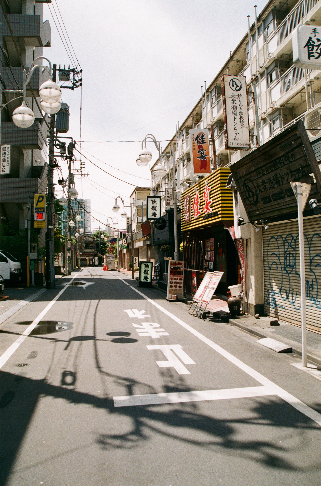

This website is awesome
This website has some subtext that goes here under the main title. It's a smaller font and the color is lower contrast

Some random information
Japan's oldest three-storeyed pagoda at Hokki-ji, Ikaruga, Nara Pref. It was built in 706.

A torii is a traditional Japanese gate most commonly found at the entrance of or within a Shinto shrine,
The steel tower is the tallest structure in Kyoto with its observation deck at 100 metres and its spire at 131 metres

This is just a picture of a japanese street lol.
Football Without Origi Is Nothing.
-Divock Origi, God of Football
Call to action! It's time!
sign up for our product! sign up for our product! sign up for our product! sign up for our product!